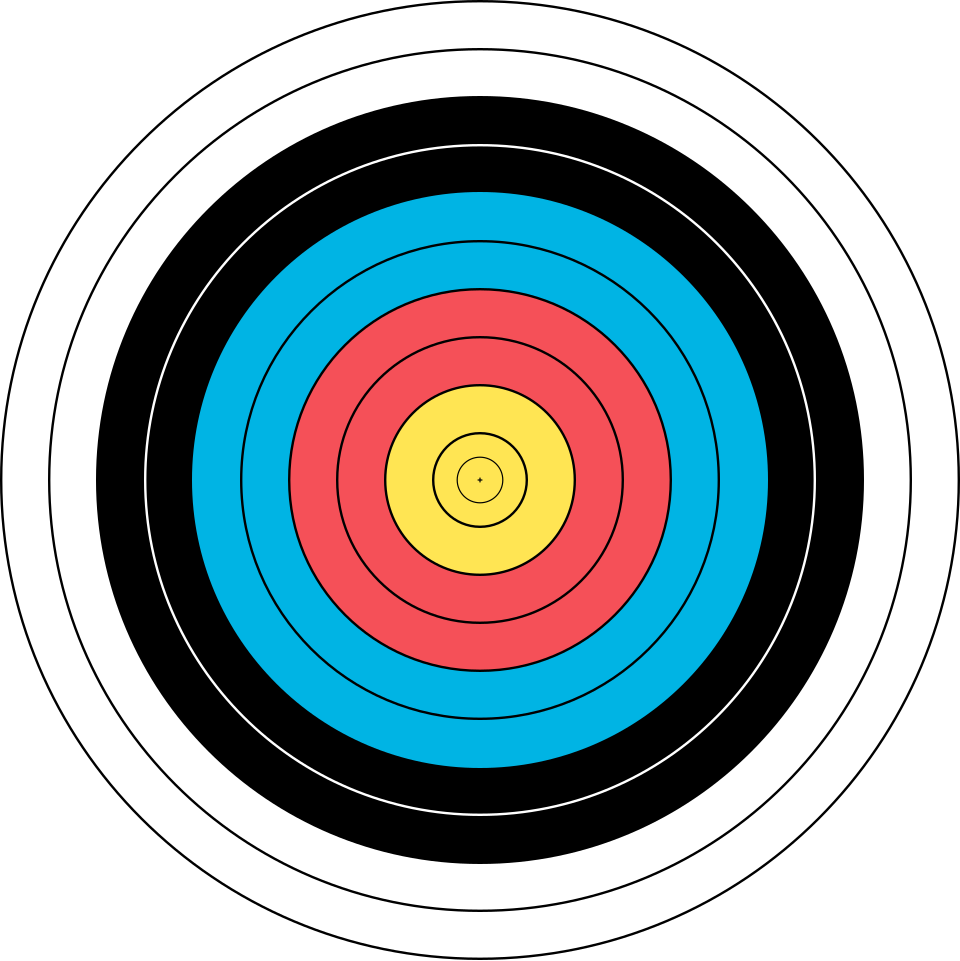
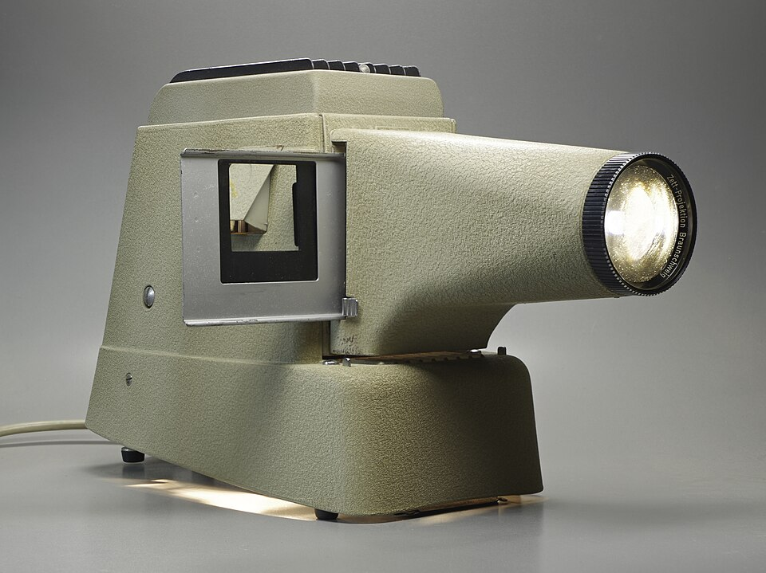
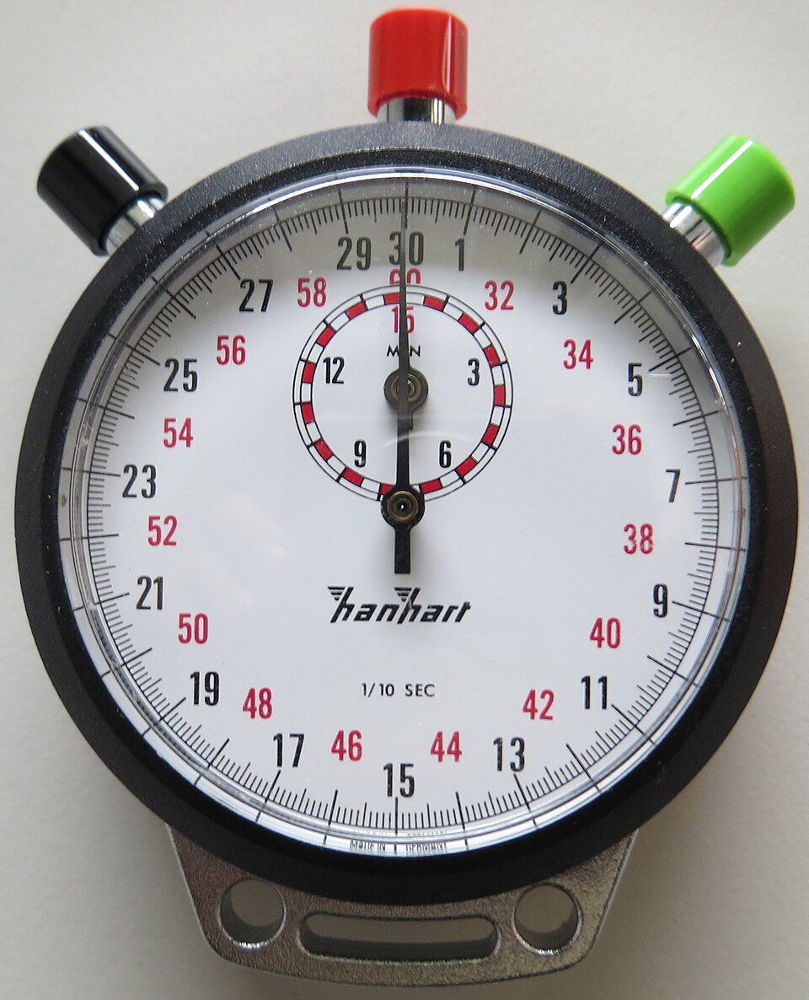

RyanK14
RyanK14
Good morning!
Nur das Schöne wird die Welt retten!
Fjodor Dostojewski
Nicht verzagen, Doc Alvers fragen!
Informatik — Grundkurs 11
Aus dem Bericht wird ein Vortrag
Eine Botschaft, Dramaturgie, Folien, Probelauf, Fragen
Nicht verzagen, Doc Alvers fragen!
Kapitel 01
Eine Botschaft
Was soll hängen bleiben?

Nicht verzagen, Doc Alvers fragen!
Wo wir stehen
Der Bericht ist fertig, gegengelesen und doppelt gesichert
Heute: die Präsentation ausarbeiten — zielgruppengerecht, mit den Methoden aus Lernbereich 2
Am Ende steht eine Generalprobe mit Rückmeldung
Leitfrage der Stunde: Wie wird aus einem Bericht ein Vortrag, der ankommt?
Nicht verzagen, Doc Alvers fragen!
Der Fahrplan des Projekts
| Ustd. | Phase | Ergebnis der Phase |
|---|---|---|
| 1–2 | Themenwahl und Planung | Leitfrage, Projektskizze, Meilensteine |
| 3–4 | Recherche | geordnetes, belegtes Material |
| 5–6 | Erarbeitung I | Gliederung und Rohfassung |
| 7–8 | Erarbeitung II | geprüfte Endfassung |
| 9–10 | Präsentation ausarbeiten | Foliensatz und Generalprobe |
| 11–12 | Präsentationen I | erste Vorträge, Portfolio-Abgabe |
| 13–14 | Präsentationen II und Auswertung | Bewertung und Reflexion |
Grün: geschafft — Orange: heute
Nicht verzagen, Doc Alvers fragen!
Zuerst die Botschaft
Die Ausarbeitung beginnt mit der einen Botschaft, die hängen bleiben soll
Aus ihr folgt, was auf die Folien kommt
Ohne sie wird der Vortrag eine Zusammenfassung des Berichts
Vorlage, Farben, Bilder: Gestaltungsfragen kommen zuletzt
Nicht verzagen, Doc Alvers fragen!
Lesen ist nicht Zuhören
Bericht
der Leser kann zurückblättern
er bestimmt sein Tempo selbst
alle Details, alle Belege
Vortrag
der Zuhörer kann nicht zurück
die Zeit ist knapp
eigene Dramaturgie: weniger Inhalt, klarer geführt
Nicht verzagen, Doc Alvers fragen!
Faustregeln für zehn Minuten
| Frage | Faustregel |
|---|---|
| Wie viele Kernaussagen? | etwa drei — mehr bleibt nicht hängen |
| Wie viele Folien? | etwa eine pro Minute, mit Spielraum |
| Wie groß die Schrift? | aus der letzten Reihe lesbar |
| Wie viele Animationen? | sparsam — nur wo sie einen Ablauf verständlicher machen |
Wer die Schrift verkleinert, hat zu viel Text — der Text ist das Problem, nicht die Größe
Alles Weitere gehört in den Bericht
Nicht verzagen, Doc Alvers fragen!
Kapitel 02
Folien, die tragen
Aussage, Zahl, Bild, Quelle

Nicht verzagen, Doc Alvers fragen!
Die Überschrift ist die Aussage
Schwach
Überschrift nennt das Thema: Umsatz
alle Unterpunkte des Kapitels
der ausformulierte Vortragstext
möglichst viele Zahlen
Stark
Überschrift nennt die Aussage: Umsatz gestiegen
wenige Elemente, die sie stützen
der Sprechtext steht in den Notizen
die eine wichtige Zahl hervorgehoben
Nicht verzagen, Doc Alvers fragen!
Zahlen, Notizen, Fachbegriffe
Zahlen als Grafik mit hervorgehobener Kernaussage — Tabellen sind im Vortrag unlesbar
Sprechtext und Stichworte in die Notizen: In der Referentenansicht seht nur ihr sie
Einen unbekannten Fachbegriff beim ersten Auftreten in einem Satz erklären
Das kostet zehn Sekunden — Nachfragen kommen im Vortrag meist nicht
Nicht verzagen, Doc Alvers fragen!
Quellen und Bildrechte
Auch im Vortrag gilt die Belegpflicht
Die Quellenfolie nennt die verwendeten Quellen — vollständig genug zum Wiederfinden
Bildquellen gehören auf die jeweilige Folie
Bei Bildern Nutzungsrechte klären — die Quellenangabe ersetzt keine Erlaubnis
Sicher sind eigene Bilder und freie Lizenzen — wie die Kapitelbilder in diesem Foliensatz
Nicht verzagen, Doc Alvers fragen!
Kapitel 03
Probelauf und Fragen
Dramaturgie, Uhr, Technik, Antworten

Nicht verzagen, Doc Alvers fragen!
Die Dramaturgie
| Teil | was dort hingehört |
|---|---|
| Eröffnung | ein konkreter Einstieg, der die Leitfrage aufwirft: ein Fall, eine Zahl, eine Frage |
| Hauptteil | etwa drei Kernaussagen, jede belegt, verbunden durch Überleitungen |
| Schluss | die Antwort auf die Leitfrage, klar formuliert |
Der rote Faden verbindet jede Folie mit der Leitfrage — eine Gliederungsfolie allein leistet das nicht
Die ersten dreißig Sekunden entscheiden über die Aufmerksamkeit — Namen und Gliederung danach
Eine Dankesfolie ist kein Schluss: Das Ende bleibt am stärksten haften
Nicht verzagen, Doc Alvers fragen!
Einen Gruppenvortrag aufteilen
Nach inhaltlichen Abschnitten aufteilen — nicht abwechselnd Folie für Folie
Ein Wechsel mitten im Gedanken irritiert
Die Übergabe wird ausdrücklich formuliert
Gleiche Redezeit ist ein Nebenziel, kein Schnittkriterium
Nicht verzagen, Doc Alvers fragen!
Probelauf mit Uhr
Die tatsächliche Dauer wird regelmäßig unterschätzt — im Kopf läuft der Vortrag schneller
Erst der Probelauf zeigt, was gestrichen werden muss — kürzen ist vorher leichter als währenddessen
Technik: die Datei auf dem Vortragsrechner testen, Auflösung und Ton prüfen
Schriften und Videos machen auf fremden Rechnern gern Probleme
Ersatz mitbringen: ein PDF auf dem Stick ist der Rettungsanker
Nicht verzagen, Doc Alvers fragen!
Fragen vorbereiten
Die drei wahrscheinlichsten Fragen vorher überlegen und beantworten
Die Schwachstellen eurer Arbeit kennt ihr selbst am besten — Zusatzfolien sind erlaubt
Keine Antwort? Offen sagen und, wenn möglich, den Weg zur Antwort skizzieren
„Das haben wir nicht untersucht, man müsste ...“ ist eine gute Antwort
Erfundene Antworten fallen fast immer auf
Nicht verzagen, Doc Alvers fragen!
Generalprobe mit Peer-Feedback
Jede Gruppe hält ihren Vortrag einmal komplett und mit Uhr vor einer Nachbargruppe
Die Zuhörenden notieren auf dem Feedbackbogen: Botschaft, roter Faden, Folien, Zeit
Dieselben Kriterien wie später bei der Bewertung: die Bewertungsmatrix
docalvers.de/svp/bewertungsmatrix.html
Rückmeldung konkret und mit Vorschlag — wie beim Gegenlesen
Nicht verzagen, Doc Alvers fragen!
Ein Vortrag ist keine Kurzfassung des Berichts: eine Botschaft, etwa drei Kernaussagen, Überschriften als Aussagen — und ein Probelauf mit Uhr.
Merksatz
Nicht verzagen, Doc Alvers fragen!
Fun Facts
PowerPoint kam 1987 auf den Markt — zuerst für den Apple Macintosh
Folien heißen im Englischen bis heute slides — wie die Dias, die man in den Projektor schob
Die 10-20-30-Regel von Guy Kawasaki: höchstens 10 Folien, 20 Minuten, Schrift mindestens 30 Punkt
Pecha Kucha: 20 Folien zu je 20 Sekunden — 2003 in Tokio von zwei Architekten erfunden
Nicht verzagen, Doc Alvers fragen!
Checkliste Präsentation
Die eine Botschaft steht in einem Satz
Etwa drei Kernaussagen, jede Überschrift ist eine Aussage
Einstieg und Schluss sind ausformuliert, die Übergaben abgesprochen
Probelauf mit Uhr gemacht — die Zeit passt
Quellen auf den Folien, die Datei als PDF auf dem Stick
Nicht verzagen, Doc Alvers fragen!
Eure Aufgabe
Botschaft festlegen und in einem Satz aufschreiben
Foliensatz bauen: Aussage-Überschriften, Grafiken statt Tabellen, Sprechtext in die Notizen
Generalprobe vor einer Nachbargruppe — mit Uhr und Feedbackbogen
Rückmeldungen einarbeiten, drei wahrscheinliche Fragen vorbereiten
Zum Schluss: Aufgaben (20) auf der Planseite — Lösung pro Aufgabe zum Aufklappen
Nicht verzagen, Doc Alvers fragen!